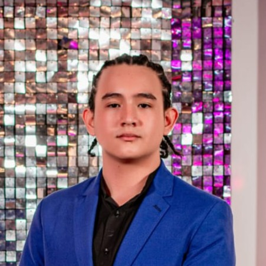
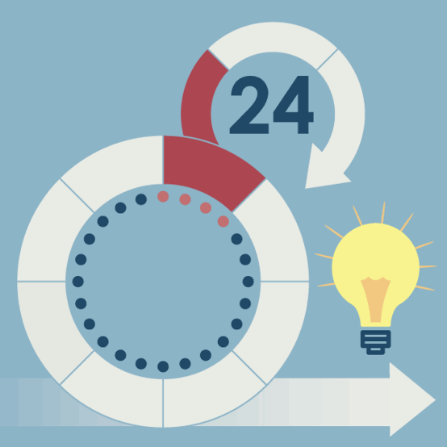

Formación
Actualmente me encuentro formándome en desarrollo de software, fortaleciendo mis habilidades en backend con Python, estructuras de datos, programación orientada a objetos y diseño de aplicaciones web.
Bachiller Técnico Empresarial Bilingüe y estudiante de Desarrollo de Software con sólidos conocimientos en Python, JavaScript, HTML, CSS y MySQL. Apasionado por la resolución de problemas, la arquitectura modular y la mejora continua.

Actualmente me encuentro formándome en desarrollo de software, fortaleciendo mis habilidades en backend con Python, estructuras de datos, programación orientada a objetos y diseño de aplicaciones web.

Tengo experiencia trabajando bajo metodologías ágiles SCRUM, colaborando en equipos multidisciplinarios, gestionando historias de usuario y participando en procesos iterativos de desarrollo.

Me caracterizo por el liderazgo proactivo, adaptabilidad, creatividad y trabajo en equipo. Creo firmemente que la perseverancia es la clave para resolver cualquier desafío técnico.